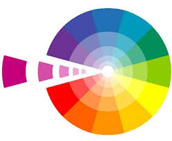
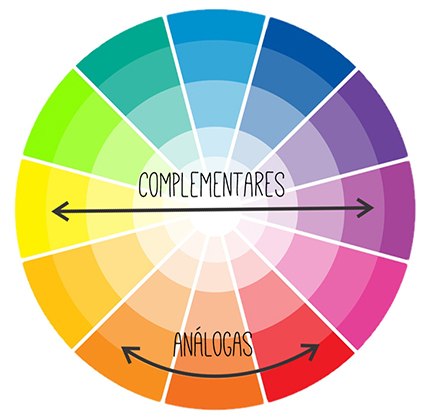
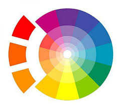
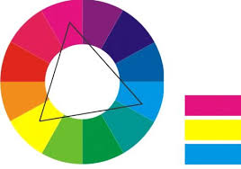
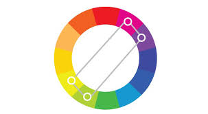

Introdução
As harmonias cromáticas são um aspecto fundamental no design gráfico. Elas ajudam a criar composições visuais atraentes e equilibradas, influenciando a percepção emocional e funcional do conteúdo. Neste site, vamos explorar diferentes tipos de harmonias cromáticas e como usá-las de forma eficaz no design de sites.
O Círculo Cromático
O círculo cromático é uma representação visual das cores dispostas em uma roda, geralmente organizadas em espectro de cores, do vermelho até o violeta. Ele serve como uma ferramenta essencial para entender a relação entre as cores e como elas podem ser combinadas para criar harmonia.
Harmonias Cromáticas
Existem diversas formas de combinar cores no design gráfico, e elas são chamadas de harmonias cromáticas. As principais harmonias cromáticas incluem:
- Harmonia monocromática:Usando diferentes tonalidades, saturações e brilhos de uma única cor. 
- Harmonia Complementar: Cores opostas no círculo cromático. 
- Harmonia Análoga: Cores adjacentes no círculo cromático. 
- Harmonia Tríade: Três cores equidistantes no círculo cromático. 
- Harmonia Tetrádica: Quatro cores que formam um retângulo no círculo cromático. 
Para Que Servem as Harmonias Cromáticas?
Cada harmonia cromática serve para diferentes objetivos no design. Por exemplo, a harmonia complementar pode criar contraste e destaque, enquanto a harmonia análoga traz suavidade e coesão. O tipo de harmonia cromática escolhida depende do efeito visual que você deseja alcançar e da mensagem que quer transmitir.
Como Escolher as Cores para Elementos do Site
Ao projetar um site, é importante considerar as cores de cada elemento para garantir a legibilidade e estética. Aqui estão algumas dicas:
- Cabeçalhos: Use cores contrastantes para chamar atenção aos títulos.
- Parágrafos: Para o texto de corpo, prefira cores mais neutras ou suaves para garantir boa leitura.
- Bordas: Use cores que complementam ou harmonizam com o fundo e os elementos principais.
- Listas: Pode-se usar diferentes tonalidades para destacar itens importantes.
- Links: Links devem ter uma cor que se destaque do texto, geralmente utilizando cores complementares ou análogas.
Ferramentas para Escolher Paletas de Cores
Existem várias ferramentas online que facilitam a escolha de paletas de cores harmônicas. Aqui estão algumas delas: